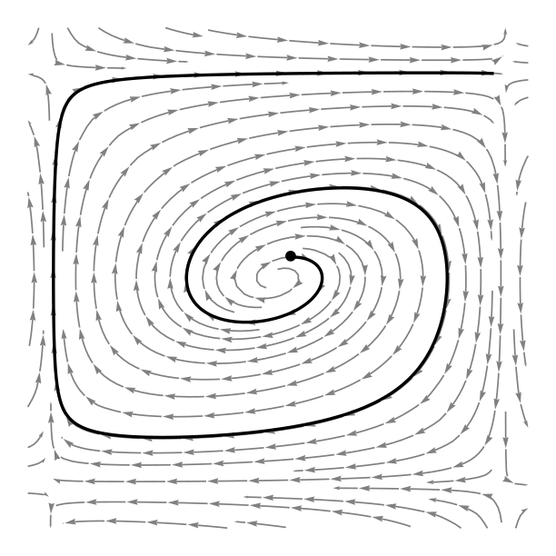

{kind=link}
Research Interests
My research focuses on the behavior and design principles of stochastic algorithms and interacting particle systems. I study stochastic approximation algorithms and their convergence properties in both finite and mean-field particle systems, using tools from dynamical systems, optimal transport, and Wasserstein gradient flows. More recently, I am exploring interacting particle dynamics that appear in attention mechanisms of transformers and other complex systems. My work aims to provide general, verifiable principles that ensure stability, convergence, and performance across a wide range of modern applications and natural processes.
Teaching
This semester I am the head TA for 18.650 (Fundamentals of Statistics) taught by Philippe Rigollet.
In Spring 2025, I co-taught 18.05 (Introduction to Probability and Statistics) at MIT with Jonathan Bloom. The course was designed around interactive, active learning, encouraging students to explore concepts through hands-on problem solving and discussions. Teaching this class was an incredibly rewarding experience, both for me and for the students, as we built a collaborative and dynamic learning environment. You can find some pictures here, here, here, here, and here.
Before that, I TA'ed Introduction to Machine Learning (the largest class in ETH Zurich) and Probablistic Artificial Intelligence, both taught by Andreas Krause.
Selected Publications
You can find the full list of my publications on Google Scholar.
- Thesis: Stochastic Approximation on Riemannian Manifolds and the Space of Measures
- Sinkhorn flow as mirror flow: A continuous-time framework for generalizing the Sinkhorn algorithm
- The dynamics of Riemannian Robbins–Monro algorithms
- A dynamical system view of Langevin-based non-convex sampling
- Stochastic approximation algorithms for systems of interacting particles
- Isotropic gaussian processes on finite spaces of graphs
- Stochastic Submodular Maximization: The Case of Coverage Functions
Contact
You can find me in the Math Department (Simons Building), room 2-232B. I hold my 18.650 office hours in 2-105, Mondays 4pm–5pm.
You can also reach me via email: moreka@mit.edu
